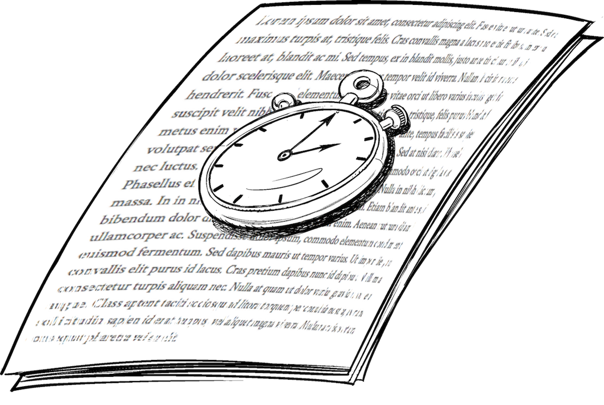
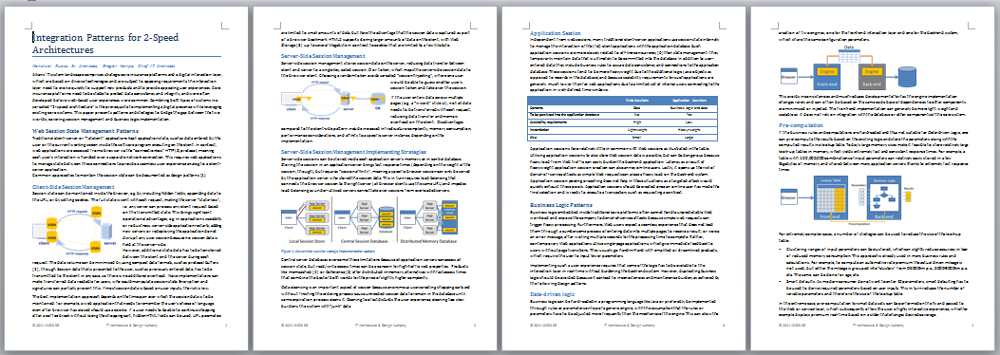
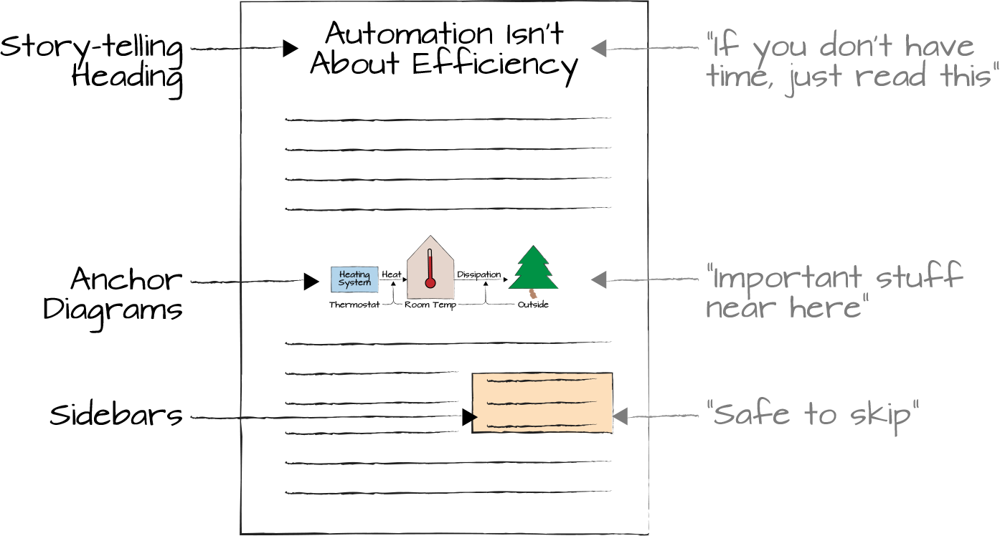

Don’t Expect Everyone to Read Word for Word

Most organizations are full of boring documents that remain largely unread. That doesn’t mean that documentation is a bad idea. Done well, it’s still the best vehicle to proverbially get everyone on the same page across a wide audience. Over time, brief but accurate technical position and decision papers have become a trademark of my architecture teams.
While the title of this chapter is a pun on the titles of popular books such as Japanese for Busy People, it intentionally implies an ambiguity that we are both writing for a busy audience and are busy authors as well.
Sadly, writing takes much more effort than reading, but skimping on writing is penny-wise and pound foolish because the written word has enormous advantages over the spoken word or slide presentations:
You can address a large audience without gathering everyone in one room (podcasts, admittedly, can also accomplish that).
People read two to three times faster than they can listen.
You can find what you want to read quickly.
Everybody sees the same, versioned content.
So, writing pays off when you have a large (or important) enough audience. The biggest benefit, though, is Richard Guindon’s insight that “Writing is nature’s way of telling us how sloppy our thinking is.” That alone makes writing a worthwhile exercise because it requires you to sort out your thoughts so that you can put them into a somewhat cohesive storyline. Unlike most slide decks, well-written documents are also self-contained, so they can be widely distributed without further commentary.
The catch with writing is that although you can to some extent force people to (at least pretend to) listen to you, it’s much more difficult to force anyone to read your text. I remind writers that “the reader is by no means required to turn the page. They decide based on what they read so far.”
Assuming the topic is interesting and relevant to the readership, I have repeatedly observed a nonlinear relationship between the quality of the writing and the attention it will receive, which is a good proxy metric for the impact of a technical paper. If the paper doesn’t meet a minimum bar for quality—for example, because it is verbose, poorly structured, full of typos, or displayed in some ridiculous, difficult to read font—people won’t read it at all, resulting in zero impact. I call this the “trash-bin” zone, named after the likely reader reaction. At the other end of the spectrum, additional impact from quality improvement ultimately tapers off as the document approaches the “gold-plating” zone.
So, you want to get the quality of your writing into the “sweet spot” and then focus on content instead of polishing further. While the sweet spot depends on the topic and the audience, I posit that the trash-bin zone is wider, and therefore more dangerous, than most developers believe. Key influencers—your most important readers—are very busy people and tend to shy away from anything that is more than a few pages long, perhaps unless it is from a high-paid consultancy, in which case they make someone else read it because they paid so much money for it.
A senior executive once refused to read a paper because his first name was misspelled on the cover page. I think he was right.
For this impatient readership, clarity of wording and brevity aren’t nice-to-haves: a lack thereof will quickly put your paper quite literally into the trash-bin zone. Blatant typos or grammar issues are like the proverbial fly in the soup: the taste is arguably the same, but the customer is unlikely to come back for more.
When Bobby Woolf and I wrote Enterprise Integration Patterns, the publisher highlighted the importance of the “in the hand” moment, which occurs when a potential buyer picks the book from the shelf to give a quick glimpse at the front and back cover, maybe the table of contents, and to leaf through. The reader makes the purchasing decision at this very moment, not when they stumble on your ingenious conclusion on page 326. This is one reason why we included many diagrams in that book: almost all facing pages contain a graphical element, such as an icon (aka “Gregorgram”), a pattern sketch, a screenshot, or a UML diagram: roughly 350 in total. We wanted to send a strong message to potential readers that it isn’t an academic book, but a pragmatic and approachable one. Technical papers should do the same: use a clean layout, insert a handful of expressive diagrams, and, above all, keep it short and to the point!
To assess what a short paper will “feel” like to the reader without wasting printer paper, I zoom out my WYSIWYG editor far enough that all pages appear on the screen, as illustrated in Figure 20-1. I can’t read the text anymore, but I can see the headings, diagrams, and overall flow; for example, the length of paragraphs and sections. This is exactly how a reader will see it when flipping through your document to decide whether it’s worth reading. If they see an endless parade of bullet points, bulky paragraphs, or a giant mess, the paper will leave “the hand” quite quickly as gravity teleports it into the recycling bin.

Text is linear: one word comes after the other, one paragraph after the previous. However, hardly any relevant technical topic is one-dimensional. One of the major challenges of technical writing (or speaking) is therefore to map a complex topic space into a linear storyline. For the algorithmically inclined, writing is a bit like coding a graph traversal problem: you can go breadth-first or depth-first. Breadth-first means that you cover all your topics at a high level, gradually descending down into the detail. Depth-first covers each topic in depth before moving on to the next topic.
A well-thought-out logical structure can help overcome this limitation. It’s easier to traverse a tree than a complex graph with many loops. Barbara Minto captures the essence of this approach in her book The Pyramid Principle.1 The “pyramid” in this context denotes the hierarchy of content; that is, a tree, not the pyramids in IT (Chapter 28).
Most animated movies have to entertain multiple audiences: the kids who love the cute characters plus the adults who had to shell out 30 bucks to take the family to the movies and spend two hours watching cute characters. Great animated movies like Shrek manage to address both audiences by including humor for kids and adults. The audiences might laugh at slightly different scenes but aren’t distracted by each other.
Technical papers that address a diverse audience should aim to do the same. They need to supply technical detail while also highlighting important decisions and recommendations, so they can be read at two levels. A few simple techniques can help make reading your paper a little bit like watching Shrek:
These replace an executive summary: your reader should get the gist of the paper just by reading the headings. Headings like “introduction” or “conclusion” aren’t telling a story and have no place in a short paper.
These provide a visual cue for important sections. Readers who flip through a paper likely pause at a diagram, so it’s good to position them strategically.
These are the short sections that are offset in a different font or color, indicating to the reader that this additional detail can be safely skipped without losing the train of thought.
This way, executives can just read the headings and look at the diagram to get the essence of your paper in a minute or two (Figure 20-2). Most readers will read the paper but might skip the callouts, whereas specialists will pay particular attention to the detail in the callouts. This way, you can help break the curse of linearity a tiny bit by giving different readers different paths through the document.

After a positive first impression, your readers will begin reading your paper. For advice on technical writing, I recommend the book Technical Writing and Professional Communication,2 which sadly appears out of print but is widely available used. It covers a lot of ground in its 700 pages, including authoring different types of documents, such as resumes. I find the sections toward the end on parallelism and paragraph structure most helpful. Parallelism demands that all entries in a list follow the same grammatical structure; for example, all start with a verb or an adjective. A counterexample would be the left column of the following, with the right-hand side showing a better approach:
| System A is preferred because: | System A is preferred due to: |
|---|---|
|
|
|
|
|
|
|
|
Inconsistent writing uses too many of your reader’s brain cells just to parse the text instead of focusing on your message. Taking the “noise” out of the language reduces friction and allows your reader to focus on the content. Parallelism is not only useful in lists but also in sentences; for example, when drawing analogies or contrasting.
Each paragraph should focus on a single topic and introduce that topic at the beginning, like this very paragraph: readers can glean from the first few words that this paragraph is about paragraphs. They can also rest assured that I don’t start talking about lists halfway through, so if they already know how to write a good paragraph, they can safely skip this one. That’s why “It is further important to note that in some circumstances one has to pay special attention to…” makes for a very poor paragraph opening.
Most programming languages support sets—i.e., unordered collections of elements—but books (and speeches) don’t: every list has an order. Because you can’t avoid it, you’d better choose the order consciously. Valid options are time (chronological), structure (relationships), or ranking (importance). Note that “alphabetical” and “serendipitous” aren’t valid choices.
“How is this ordered?” has become a standard question I ask when reviewing documents containing a list or grouping.
Loose usage of the word this as a stand-alone reference is another pet peeve of mine; for example, stating that “this is a problem” without being clear what “this” actually refers to. Jeff Ullman cites such a “non-referential this” as one of the major impediments to clear writing, exemplified in his canonical example:3
If you turn the sproggle left, it will jam, and the glorp will not be able to move. This is why we foo the bar.
Do we foo the bar because the glorp doesn’t move or because the sproggle jammed? Programmers well understand the dangers of dangling pointers and Null Pointer Exceptions, but they don’t seem to apply the same rigor to writing—maybe because your readers don’t throw a stack trace at you?
Another fantastic piece of advice from Minto is the following:
Making a statement to a reader that tells him something he doesn’t know will automatically raise a logical question in his mind […] the writer is now obliged to answer that question. The way to ensure total reader attention, therefore, is to refrain from raising any questions in the reader’s mind before you are ready to answer them.
My translation for software engineers: when writing, assume that your readers use a single-pass compilation algorithm and don’t have access to a complete symbol table. This means that forward references aren’t allowed: you can only refer to terms and concepts that were already introduced. For the algorithmically minded, you’ll need to do a topological sort on your topic graph. What if there’s a circle? You’ll get a stack overflow, just like your audience!
Following this simple advice will place your technical paper above 80% of the rest, because, sadly, the bar for technical documents is so low.
An internal presentation once stated on the first slide: “only technology ABCD has proven to be a viable solution.” When I asked for proof, it turned out that none existed due to “lack of time and funding.” These aren’t just wording issues, but fatal flaws. A reader no longer wants to see page 2 if they cannot trust page 1.
Lastly, make sure to avoid unsubstantiated claims. I refer to this phenomenon as the “hourglass presentation”: it starts with a lot of buzzwords and promises, then becomes very narrow, and ends with bold requests for funding and headcount.
In technical writing, your readers are not out to appreciate your literary creativity, but to understand what you are saying. Therefore, less is more when it comes to word count. Although Walker Royce5 spends a good part of his book musing about English words, his advice on brevity and editing is sound. His paraphrased citation from Zinsser6 on the usage of “I might add,” “It should be pointed out,” and “It is interesting to note,” hits the mark:
If you might add, add it. If it should be pointed out, point it out. If it is interesting to note, make it interesting.
Royce also gives many concrete suggestions on how to replace long-winded expressions or “big” words with single, simple words, thereby not only reducing noise but also aiding non-native speakers.
If you are up to a more rigorous evaluation of properly linking words into sentences and you are willing to put up with a few tirades and snipes, I recommend Barzun’s Simple & Direct,7 which isn’t simple, but pedantically direct.
Our team’s internal editing cycles routinely cut word count by 20 to 30% despite including additional material or detail. To the first-time author this might be shocking, but Saint-Exupéry’s adage that “perfection is achieved not when there is nothing more to add, but when nothing is left to take away” is especially true for technical papers (and good code for that matter). I actually edited this very chapter down by 15%.
When this type of cruel editing was first bestowed upon me by a professional copy editor, I felt that the document no longer sounded “like me.” Over the years, I have come to appreciate that being crisp and accurate is a great way to have a technical paper sound like me. Longer, more personal pieces like this book allow some “slack” to help the reader keep attention after many pages.
The most effective vehicle for improving technical papers is to hold a writer’s workshop.8 Such a workshop entails attendees discussing a paper, which they have read, while the author is allowed to listen but not to speak. This setup simulates someone reading and trying to understand a paper. The author must remain silent because they cannot pop out of their paper to explain to each reader what was really meant—a document must be self-contained. Because writer’s workshops are time intensive, they are best applied after the paper has gone through an initial review.
A document doesn’t need to be all encompassing—who reads an encyclopedia, anyway? Twenty years ago, Ward Cunningham defined the notion of a technical memo, a document that describes a particular aspect of the system, in his Episodes pattern language:9
Maintain a series of well formatted technical memoranda addressing subjects not easily expressed in the program under development. Focus each memo on a single subject. […] Traditional, comprehensive design documentation […] rarely shines except in isolated spots. Elevate those spots in technical memos and forget about the rest.
Keep in mind, though, that writing technical memos is more useful, but not necessarily easier, than producing reams of mediocre documentation. The classic example of this noble idea gone wrong is a project wiki full of random, mostly outdated, and incohesive documentation. This isn’t the tool’s fault (the wiki was not quite coincidentally also invented by Ward); rather, it’s due to a lack of emphasis over completeness (Chapter 21) by the writers.
Producing high-quality position papers can lead to an unexpected amount of organizational headwind. The word perfection is invariably used with a negative connotation by those who are poor writers or want to avoid sharing their team’s work. Ironically, these are often the same departments that love to be entertained by colorful vendor presentations.
Other teams claim that their “Agile” approach spares them from any need to produce documentation, notwithstanding the fact that those teams have no running code to show either. Agile software development places the emphasis on producing working code that is worth reading, but multiyear IT strategy plans are unlikely to manifest themselves in code alone. Alas, good documents seem to be even more difficult to find than good code.
Some corporate denizens actively resent writing clear and self-contained documents because they prefer to “tune” their story for each audience. Naturally, this approach doesn’t scale (Chapter 30).
Writing good documents in an organization that is generally poor at writing can give you significant visibility, but it can also rock the political system.
The first time I sent a positioning paper on digital ecosystems to senior management, a person complained to both my boss and my boss’s boss about me not having “aligned” the paper with her.
Communication is a mighty tool, and some people in your organization will fight hard to control it. Pick your targets wisely.
1 Barbara Minto, The Pyramid Principle: Logic in Writing and Thinking (Upper Saddle River, NJ: Prentice Hall, 2010).
2 Leslie A. Olsen and Thomas N. Huckin, Technical Writing and Professional Communication, 2nd ed. (New York: McGraw-Hill, 1991).
3 Jeff Ullman, “Viewpoint: Advising students for success,” Communications of the ACM 52, No. 3 (March 2009).
4 Literally, “brevity gives spice,” ironically translating into “short and sweet.”
5 Walker Royce, Eureka!: Discover and Enjoy the Hidden Power of the English Language (New York: Morgan James Publishing, 2011).
6 William Zinsser, On Writing Well: The Classic Guide to Writing Nonfiction (New York: Harper, 2006).
7 Jacques Barzun, Simple & Direct (New York: Harper Perennial, 2001).
8 Richard P. Gabriel, Writers’ Workshops & the Work of Making Things: Patterns, Poetry… (Upper Saddle River, NJ: Pearson Education, 2002).
9 John Vlissides, James O. Coplien, and Norman L. Kerth, Pattern Languages of Program Design 2 (Reading, MA: Addison-Wesley, 1996).